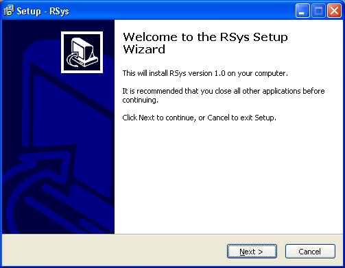
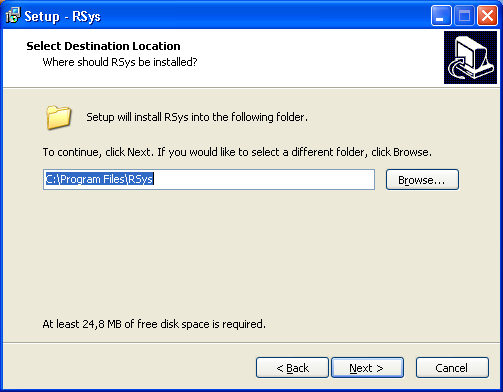
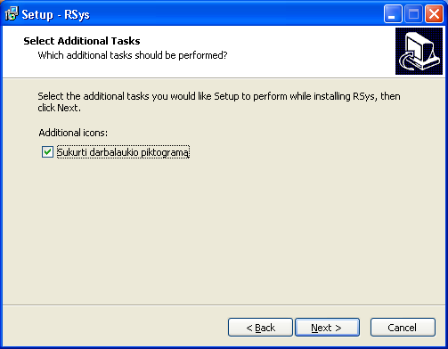
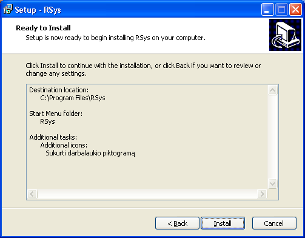
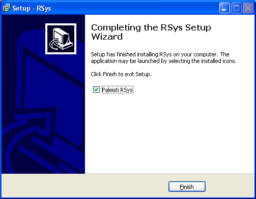

- Norėdami įdiegti sistemą, spauskite „Next“.
- Pasirinkite aplanką, į kurį norite įdiegti sistemą, ir spauskite „Next“.
- Pasirinkite pradžios meniu aplanką, kuriame norite turėti sistemos paleidimo nuorodas, ir spauskite „Next“.
- Pažymėkite varnele, jei norite sistemos piktogramą sukurti ant darbastalio, ir spauskite „Next“.
- Patikrinkite informaciją. Jei radote klaidų, grįžkite naudodami „Back“ mygtuką, kitu atveju spauskite „Install“.
- Pažymėkite varnele, jei norite paleisti sistemą iškart po diegimo, ir spauskite „Finish“.





